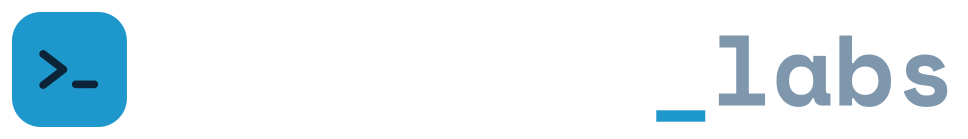
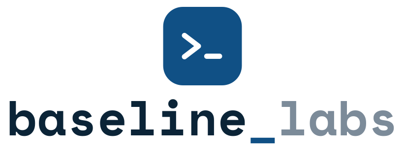
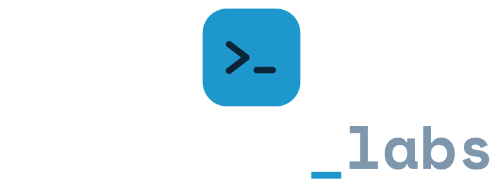

Baseline Labs — logo kit
Option 4: a >_ terminal-prompt tile with the baseline_labs wordmark set in Space Mono Bold. Every asset has a light-background and dark-background variant, on a transparent canvas.
1 · Icon only
icon-light.svg · on light
icon-dark.svg · on dark
2 · Wordmark only
wordmark-light.svg
wordmark-dark.svg
3 · Horizontal lockup
 lockup-light.svg
lockup-light.svg
lockup-dark.svg4 · Stacked lockup — icon above, wordmark centred

lockup-stacked-light.svg
lockup-stacked-dark.svg5 · Icon at export sizes (PNG, transparent)
6 · Typing animation
For the landing page — the wordmark types itself out with a blinking cursor. Not for the nav bar, where the static lockup is used.
baseline_labs
baseline_labs
7 · Where each variant goes
| Use | Asset | Notes |
|---|---|---|
| Site header | lockup-light.svg | Horizontal, on the white/frosted bar |
| Landing hero | Live text + icon-light.svg | Typing animation — live text stays crisp and animatable |
| Dark panels | lockup-dark.svg | Featured-project panel, dark CTA bands |
| Favicon | icon-light-32.png | Also 64 for retina tabs |
| App / PWA icon | icon-light-512.png | 512 and 256 for stores and manifests |
| Social / OG image | lockup-stacked-light@2x.png | Centred stack reads well in a square-ish crop |
| Print / large format | any .svg | Vector, text already outlined |
8 · Colour
#0B2437 ink
#105085 brand
#1E98CC accent
#7C8B99 mute